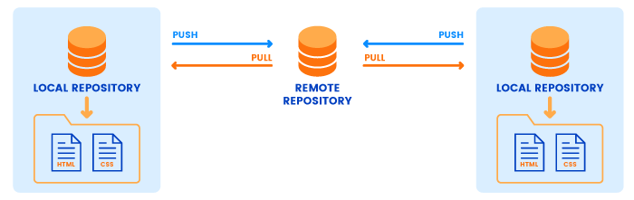
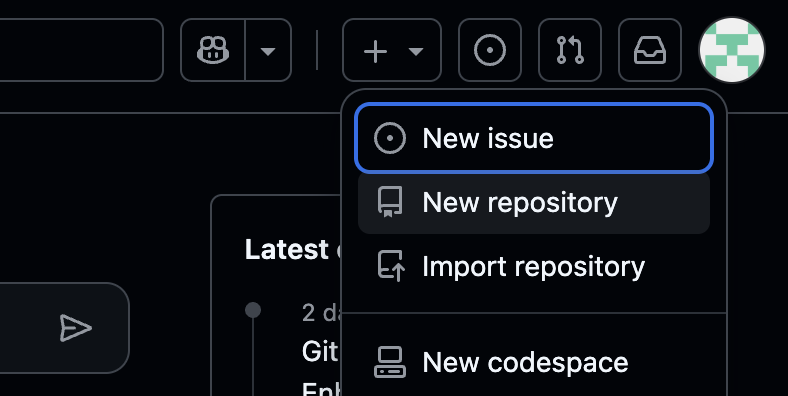
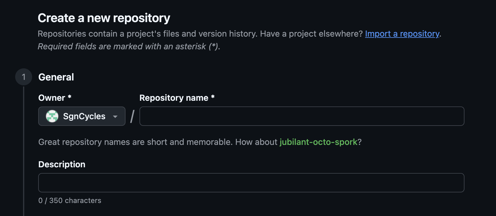
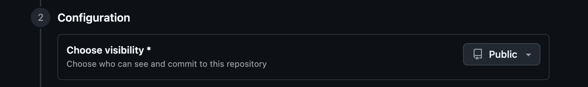
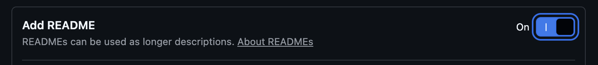

From Solo Coding to Team Projects - Here's How GitHub Makes It Easy
Have you ever worked on a project where someone “accidentally” deleted the final version right before the deadline? Or where five people were editing the same file, and nobody knew whose version was the right one?
That's where Git and GitHub swoop in like superheroes for your code and project. Git keeps track of every single change you make, like a time machine for your files, and GitHub takes it a step further by storing your project safely in the cloud so you can collaborate without chaos.
In this page, we'll walk through:
- Why remote repositories are essential
- How to create a project on GitHub
- The Git commands you'll actually use (and not just pretend to understand)
Why Remote Repositories Are Necessary
Think of your local repository (the project folder on your computer) as your personal workspace - your secret lab. It's where you test, tinker, and sometimes break things (no shame). But what happens if your computer suddenly crashes?That's where remote repositories (like GitHub) come in.
A remote repository is your backup and collaboration hub. It lets you:
- Keep your project safe online
- Collaborate easily
- Track progress and changes
- Show off your work
If your computer explodes, your code lives on!
Teammates can clone your project, add new features, and send updates without overwriting each other's work.
You can see who did what and when, which means no more blaming the wrong person for breaking the code.
GitHub serves as your online portfolio. Perfect for future you who's looking for jobs or showcasing your work.

How to Create a Project on GitHub
Creating a project on GitHub is easier than you think. Here's how to do it step-by-step:
- Step 1: Log in to GitHub
- Step 2: Click the or the “+” and select “New repository”
- Step 3: Name your repository
- Step 4: Add a description (optional, but helpful)
- Step 5: Choose visibility
- Public - Everyone can see your code (great for open-source and class projects).
- Private - Only you (and people you invite) can see it. Perfect for secret school projects or world domination plans.
- Step 6: Initialize with a README (optional)
- Step 7: Click
Go to github.com and log in (or sign up if you don't have an account yet).
You'll find the “+” sign at the top-right corner of the page.

Pick a name that makes sense (and isn't “test123”). This will be your project's home on GitHub.

A short sentence explaining what your project does. Future you will thank you for it.

Checking this box gives you a starting file to describe your project. It's like an “About Me” for your repo.

Boom! You've just made a new remote home for your project. Now you've got a place in the cloud to safely store, share, and collaborate on your work - you can throw away your USB stick.
The Git Commands You'll Actually Use
So you've got your shiny new GitHub repo - now it's time to connect it to your computer and start working like a pro. Don't worry, these commands aren't as scary as they look!
1. Create a Project LocallyStart by making a new folder for your project (using your terminal mkdir directory-name or just the usual right-click → New Folder).
Then open that folder in your terminal and run: git init
This command turns your folder into a Git repository - basically saying, “Git, please start keeping track of everything I do here.”
You can now add your project files (HTML, CSS, code, etc.). Once you're happy with your progress:
git add .tells Git to keep an eye on all your files.git commit -m "First commit - my project begins!"saves a snapshot of your progress (the message helps you remember what changed).
Now it's time to connect your local project to your remote one (the GitHub repo you created earlier). First, copy the HTTPS or SSH link from your GitHub repository page - it looks like this: https://github.com/your-username/your-repo-name.git Then in your terminal:
git remote add origin https://github.com/your-username/your-repo-name.gitgit branch -M maingit push -u origin main
git remote add origin ...→ “Here's the address of my remote repo.”git branch -M mainRenames your main branch (for consistency).git push -u origin mainUploads your local work to GitHub for the first time!
One of the best parts about GitHub is collaboration — working together on a project and letting other people help improve your project. Here's how that usually works: They “fork” your repo (This creates their own copy of your project under their account); They make changes They clone their fork to their computer, edit the files, and use:
git add .git commit -m "Added a cool new feature!"git push
Quick Recap
git initStart a new local repo.git add + git commitSave your changes.git remote add origin ...Connect to GitHub.git pushUpload your work.
Wrapping It Up: Now You're Ready to Git Going
And there you have it - you've just leveled up from “What's a repo?” to “I can push and pull with confidence!”
You now know:
- Why remote repositories are life-savers (and stress-savers).
- How to create your very own project on GitHub.
- The essential Git commands to manage and share your work.
Git and GitHub might seem a bit intimidating at first, but once you get the hang of it, it's like having superpowers for your projects. You can track every change, collaborate with teammates smoothly, and keep your work safe in the cloud. So go ahead - make a repo, break some code (it's part of the fun), and commit to becoming a Git wizard!